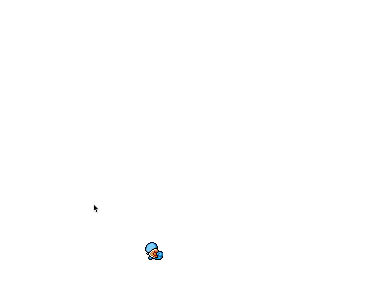
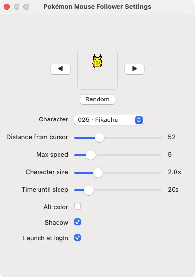

A Pokémon that follows your cursor.
A tiny macOS menu-bar app. A pixel-art Pokémon strolls across your screen, chases your mouse, and curls up to sleep when you stop.
Free · no account · drag-and-drop install.

Small app, lots of charm
Everything runs quietly in the menu bar. Tweak it, then forget it's there.
Menu-bar only
No Dock icon — just a paw in the menu bar. It stays out of your way.
Physics-based following
The character keeps its distance and moves with its own speed and acceleration, so it feels alive rather than glued to the cursor.
8-direction animation
Sprites turn to face wherever they're walking, in true pixel-art style.
Idle → sleep
Stop moving and it settles down, then falls asleep. Move the mouse and it wakes right up.
251 Pokémon
All of Gen 1 & 2, with alternate-color variants for 124 of them. Pick with a preview, arrows, or a random button.
Click-through & multi-monitor
A transparent overlay that never blocks your work, and crosses between displays seamlessly.

Make it yours
Open Settings from the menu bar and every change applies instantly:
- Live preview of the selected character, with ◀ ▶ arrows and a Random button
- Distance from the cursor, max speed, character size
- Time until it falls asleep
- Alt-color sprites and a soft ground shadow
- Launch at login
How it behaves
Movement is independent of mouse speed — if you dash, it lags behind and then catches up at its own pace.
walk → stop → idle → [time until sleep] → sleep
↑ cursor moves ↓
└──── walk ────┘
Install in 30 seconds
No Xcode, no developer tools — just download and drag.
Download
Grab the latest .dmg from the Releases page and open it.
Drag to Applications
Drop Pokémon Mouse Follower into your Applications folder.
Launch
Open it from Launchpad. A 🐾 appears in the menu bar and your Pokémon starts following the mouse.
Frequently asked questions
What is Pokémon Mouse Follower?
It is a free, open-source macOS menu-bar app. A pixel-art Pokémon character walks around your screen and follows your mouse cursor, keeping a small distance and moving with its own speed and acceleration.
Is it free?
Yes — completely free and open source. You can read the full source code on GitHub.
Which macOS versions are supported?
macOS 13 (Ventura) and later, on both Apple Silicon and Intel Macs (a universal build).
Does it slow down my Mac or block clicks?
No. It's a lightweight menu-bar app drawn on a transparent, click-through overlay, so it never blocks the apps underneath and has no Dock icon.
How many Pokémon can I choose from?
251 Pokémon from Generations 1 and 2, plus alternate-color sprites for the 124 that have them. You can browse with a live preview, arrows, or a random button.
How do I install it?
Download the .dmg from Releases, drag the app into Applications, and launch it. Downloads open normally on macOS — no developer tools needed.
How do I uninstall it?
Click the 🐾 menu-bar icon → Quit, then drag the app from Applications to the Trash.
Where do the sprites come from?
The pixel animations are from PMD Sprite Collab, a community project. This is a non-commercial personal fan project; Pokémon © Nintendo / Creatures Inc. / GAME FREAK inc.